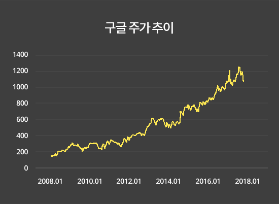
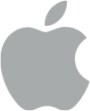
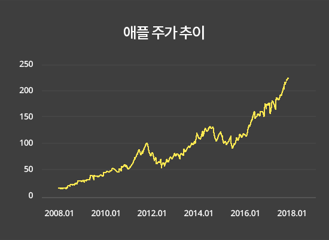
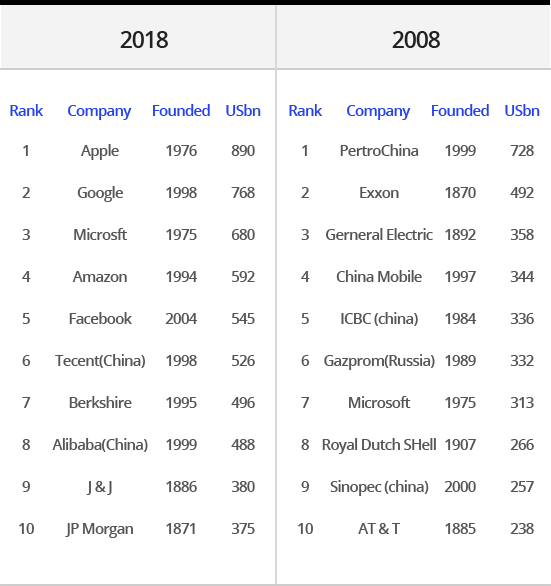

<!DOCTYPE html>
<html lang="en">
<head>
    <meta charset="UTF-8">
    <meta name="viewport" content="width=device-width, initial-scale=1.0, minimum-scale=1.0, maximum-scale=1.0, user-scalable=no">
    <meta http-equiv="X-UA-Compatible" content="ie=edge">
    <meta name="format-detection" content="telephone=no">
    <link href="../../resources/css/swiper.min.css" media="screen" rel="stylesheet">
    <link href="../../resources/css/style.css" media="screen" rel="stylesheet">
    <link href="../../resources/css/site_skt.css" media="screen" rel="stylesheet">
    <script src="../../resources/js/jquery-1.12.4.min.js"></script>
    <script src="../../resources/js/swiper.min.js"></script>
    <script src="../../resources/js/renew_design.js"></script>
    <title>해외주식 인사이트</title>
</head>
<body>
    <div id="wrap">
        <header id="header">
            <div class="headWrap">
                <h1 class="">해외주식 인사이트</h1>
                <button class="icon btnBefore"><i></i></button>
                <button class="icon btnClose"><i></i></button>
            </div>
        </header>
        <div id="container" class="insite detail">
            <section class="detailTop">
                <span class="bg"></span>
                <p class="date">Update 2019.10.01</p>
                <h2 data-cat="no">
                    <p>글로벌 1등 기업에 투자해야 하는 이유<i>!</i></p>
                </h2>
            </section><!--배경 제목-->
            <section class="ctWrap">
                <div class="ctDesc">
                    <section class="detail_type news4">
                        <article class="ui_cover">
                            <strong>경제적 해자(Moat)의 존재</strong>
                            <br>
                            해자란 단어를 아시나요? 중세의 성 주변을 둘러싼 
                            연못이자 적으로부터 침입을 막기 위한 강력한 방어막, 우리는 그것을 해자라고 부릅니다.
                            그렇다면 ‘경제적 해자’라는 말은 무엇을 의미할까요? 
                            경제적 해자라는 말은 워런버핏이 이끄는 버크셔 해서웨이의 
                            연례 주주총회에서 처음 언급된 개념으로, 어떤 기업이 
                            가지고 있는 고유의 특허, 기술, 약품 등을 지칭하며 다른 
                            기업이 쉽게 넘볼 수 없는, 진입장벽이 높은 유무형의 
                            자산을 일컫습니다.
                            분야별 글로벌 1등 기업들은 이러한 경제적 해자를 바탕으로 
                            고속 성장을 이뤄내고 있으며 좋은 실적으로 주가도 꾸준히 
                            우상향하고 있는 것을 발견할 수 있습니다.
                            <br><br>
                            <div class="company">
                                <span class="img google"></span>
                                <span>글로벌 1등 기업</span>
                                <p>글로벌 검색 엔진 1위 구글</p>
                                <button type="button">구글 종목 더보기</button>
                            </div>
                            <br><br>
                            2016년 3월, 한국의 이세돌이라는 바둑 최고수와 
                            바둑을 두는 인공지능 프로그램 ‘알파고’가 세기의
                            대결을 펼치게 됩니다.  바둑 몇 판으로 일약 스타덤에 
                            오르게 오르게 되었고, 이 사건으로 우리는 ‘인공지능’에 
                            대해 관심을 가지게 되었습니다.  이 ‘알파고’를 만든 
                            회사가 바로 구글입니다. 
                            구글은 또한 웨이모라는 회사를  분리하여 자율주행차 
                            시장에 가장 독보적인 행보를 보이고 있습니다.  가장 
                            많은 주행데이터와 기술을 지니고 있으며 
                            애리조나에서는  이미 자율주행 택시를 상호화하여 
                            시범운행을 진행하고 있을  정도로 현재 자율주행분야
                            에서는 구글이 가장 앞서나간 기술력을 가지고 있다고 
                            봐도 무방합니다. 또한 구글은 유투브라는 거대한 
                            미디어 플랫폼 사업을 통해 막대한 광고 수입을  올리고 
                            있기도 합니다. 구글의 경우 미국 검색 시장의  86.4%를 
                            점유하고 있고, 유럽 검색 시장에선 오히려 
                            미국보다 높은 91.4%를 점유하고 있습니다. 중국 검색 
                            시장에서의 점유율은 15%에 불과한데 이는 중국의 
                            내부 규제로 인해 중국 기업 바이두가 수혜를 입고 있는  
                            상황으로 볼 수 있습니다.
                            이처럼 구글은 다른 기업들이 쉽게 따라올 수 없을 만한 
                            검색 엔진 기술력을 통해 경제적 해자를 톡톡히 누리고 
                            있으며 이는 장기간 구글이 글로벌 1등 기업의 위상을 
                            유지할 수 있는 강력한 원동력이 될 것입니다.
                            <br><br>
                            
                            <br><br>
                            <div class="company">
                                <span class="img apple"></span>
                                <span>글로벌 1등 기업</span>
                                <p>독보적 브랜드 파워, 애플</p>
                                <button type="button">애플 종목 더보기</button>
                            </div>
                            <br><br>
                            1997년 파산의 위기를 겪은 애플이 2018년 8월 2일 
                            미국 주식 시장 역사상 처음으로 1조 달러클럽에 
                            입성을 했습니다. 아마존과의 치열한 각축전을 예상
                            했지만 허망하게 2분기 실적 발표와 이후 실적에 대한 
                            낙관으로 인해 손쉽게 아마존을 제치고 먼저 1조 달러 
                            클럽에 오르게 되었습니다.
                            불과 10년전 현재 고인이 된 스티브 잡스의 손에는 
                            세상을 바꿀 강력한 제품이 있었습니다. 당시 많은 사람
                            들은 장난감이라고 비웃기도 했고 많은 호사가들은 
                            악담을 던지는데 주저하지 않았습니다.
                            하지만 그의 손에 있던 스마트폰이 세상을 한순간에 
                            바꾸어 버렸습니다. 이젠 미국 10대들의 80%이상의 
                            점유율과 전세계 스마트폰 영업 이익의 80% 이상을 
                            애플이 가져가고 있습니다
                            <br><br>
                            
                            <h3 class="mTop155">영원한 1등 기업은<br>없다 <i>!</i></h3>
                            <br>
                            아래 표는 2008년과 2018년 글로벌 시가총액 상위 10위 기업들입니다
                            <br><br>
                            
                            <br><br>
                            10년 전이나 지금이나 10위 안에 들어있는 기업은 
                            마이크로 소프트(MSFT)가 유일하다는것, 그리고 
                            2008년 글로벌 시가총액 3위 기업이었던 제너럴 
                            일렉트릭의 몰락은 우리에게 상당한 시사점을 던져
                            줍니다.
                            영원한 기업은 없습니다. 모든 기업은 시대적 흐름에 
                            따라 성장하기도 하고 쇠퇴하기도 합니다. 경제흐름과 
                            변화에 적절하게 반응하여 현명하게 투자한다면 
                            우리 자산을 지키고 늘리는데 도움을 받을 수 있을 
                            것입니다.
                            <p class="mTop155 cau center fc555">본 콘텐츠는 이용자의 금융 지식 향상을 목적으로 작성된<br>교육콘텐츠입니다.</p>
                        </article>
                    </section>
                    <section class="relateSec">
                        <h3 class="tit">관련 투자인사이트 정보</h3>
                        <div class="newsSlide swiper-container">
                            <div class="swiper-wrapper">
                                <div class="swiper-slide">
                                    <a href="invest_news_detail1.html" data-ajax="false">
                                        
                                        <span class="elip2">해외주식<br>2019년 투자가이드</span>
                                    </a>
                                </div>
                                <div class="swiper-slide">
                                    <a href="invest_news_detail2.html" data-ajax="false">
                                        
                                        <span class="elip2">2019 글로벌 기업 주식 전망 Part 1.<br>(애플 vs 마이크로소프트)</span>
                                    </a>
                                </div>
                                <div class="swiper-slide">
                                    <a href="invest_news_detail3.html" data-ajax="false">
                                        
                                        <span class="elip2">2019 글로벌 기업 주식 전망 Part 2.<br>(아마존 vs 구글)</span>
                                    </a>
                                </div>
                                <div class="swiper-slide">
                                    <a href="invest_news_detail4.html" data-ajax="false">
                                        
                                        <span class="elip2">배당투자로 매달 두둑한 월급받는 법! <br>최초공개!</span>
                                    </a>
                                </div>
                                <div class="swiper-slide">
                                    <a href="invest_news_detail5.html" data-ajax="false">
                                        
                                        <span class="elip2">월가 큰손들, 2019년 주식 투자 묘책!<br>“미국이 으뜸”</span>
                                    </a>
                                </div>
                                <div class="swiper-slide">
                                    <a href="invest_news_detail6.html" data-ajax="false">
                                        
                                        <span class="elip2">“2019년 미국 주식”<br>추천 종목을 공개합니다!</span>
                                    </a>
                                </div>
                                <div class="swiper-slide">
                                    <a href="invest_news_detail7.html" data-ajax="false">
                                        
                                        <span class="elip2">국내투자자들의 미국 주식 TOP10</span>
                                    </a>
                                </div>
                                <div class="swiper-slide">
                                    <a href="invest_news_detail8.html" data-ajax="false">
                                        
                                        <span class="elip2">원금이 2배 걸리는 시간은?</span>
                                    </a>
                                </div>
                                <div class="swiper-slide">
                                    <a href="invest_news_detail9.html" data-ajax="false">
                                        
                                        <span class="elip2">“워렌 버핏은 왜<br>삼성전자가 아닌 애플 주식을 샀을까?</span>
                                    </a>
                                </div>
                                <div class="swiper-slide">
                                    <a href="invest_news_detail10.html" data-ajax="false">
                                        
                                        <span class="elip2">“36조” 붙 붙는 해외주식 투자…<br>1위 종목은?</span>
                                    </a>
                                </div>
                                <div class="swiper-slide">
                                    <a href="invest_news_detail11.html" data-ajax="false">
                                        
                                        <span class="elip2">글로벌 1등 기업에 투자해야 하는 이유<i>!</i></span>
                                    </a>
                                </div>
                                <div class="swiper-slide">
                                    <a href="invest_news_detail12.html" data-ajax="false">
                                        
                                        <span class="elip2">해외주식은 미국부터 시작해야하는 3가지 이유</span>
                                    </a>
                                </div>
                            </div>
                            <div class="swiper-pagination"></div>
                        </div>
                        <script>
                            swirHoriz('newsSlide');
                        </script>
                    </section><!-- //관련테마정보 -->
                </div>
            </section>
        </div>
    </div>
</body>
</html>